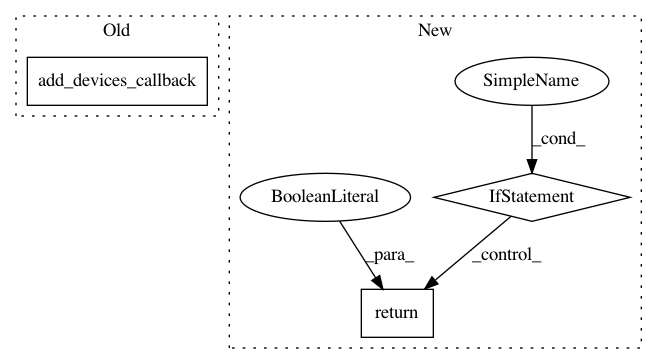

40c71b5d963d752402ccdc3de12faa58c974743e,homeassistant/components/cover/command_line.py,,setup_platform,#Any#Any#Any#Any#,17
Before Change
properties.get("stopcmd", "true"),
properties.get("statecmd", False),
properties.get(CONF_VALUE_TEMPLATE, "{{ value }}")))
add_devices_callback(devices)
// pylint: disable=too-many-arguments, too-many-instance-attributes
class CommandCover(CoverDevice):
After Change
)
)
if not covers:
_LOGGER.error("No covers added")
return False
add_devices(covers)
// pylint: disable=too-many-arguments, too-many-instance-attributes
In pattern: SUPERPATTERN
Frequency: 3
Non-data size: 3
Instances
Project Name: home-assistant/home-assistant
Commit Name: 40c71b5d963d752402ccdc3de12faa58c974743e
Time: 2016-09-02
Author: mail@fabian-affolter.ch
File Name: homeassistant/components/cover/command_line.py
Class Name:
Method Name: setup_platform
Project Name: home-assistant/home-assistant
Commit Name: 40c71b5d963d752402ccdc3de12faa58c974743e
Time: 2016-09-02
Author: mail@fabian-affolter.ch
File Name: homeassistant/components/switch/command_line.py
Class Name:
Method Name: setup_platform
Project Name: home-assistant/home-assistant
Commit Name: 2e9ee2863734fa3e1cec6e450c0888a8e3f3887f
Time: 2015-10-20
Author: makemeasandwich@users.noreply.github.com
File Name: homeassistant/components/light/hyperion.py
Class Name:
Method Name: setup_platform